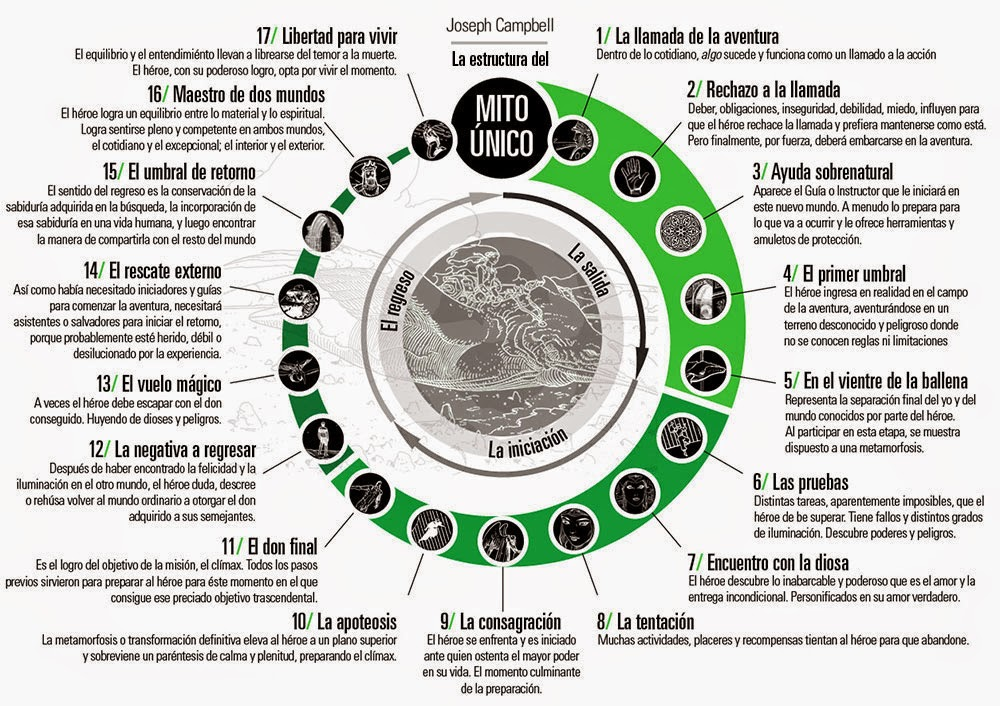

El camino del heroe y el sindrome de campbell
Inicios

Brandon Sanderson nace el 19 de diciembre en Lincon, Nebraska. De niño
era un lector habitual, pero con el transcurso de los años fue
perdiendo interes, hasta el punto que buscaba atajos en la escuela
para evitar la agonia de leer un libro
Fue por recomendacion de su profesora en octavo grado, terminando la
secundaria, que leyo "Dragonsbane" (por Barbara Hambly - 1985), el
cual revivio la llama de su infancia; a partir de entonces, Brandon
Sanderson, continuó como lector persistente volviendose la lectura y
la escritura, sus principales hobbies..
Se matriculo con honores en la Universidad Brigham Young en el 1994,
como estudiante de quimica.
Un año mas tarde sirvio como misionero, siendo el reconocido como
mormom, mas tarde sus creencias religiosas marcaran sus libros y será
el enfoque principal de criticas por diferentes colectivos.
Durante su viaje como misionero, anhelo la escritura, y comprendio que
la quimica no le llenaba por dentro, por lo que en esos momentos
decidio el futuro de su vida.
En su regreso a la Universidad BY, realizo una especializacion en
ingles.
Su carrera
Su principal diferencia con otros escritores, es que su fama comenzo
muy temprana, esto que no quiere decir que tuvo otros oficios, su
aficcion por la escritura se desarolla como entretenimiento en uno de
sus primeros trabajos, siendo recepcionista en un hotel.
Trabajando para mantener sus estudios, escribio varias novelas, de las
cuales envio para distribuir, se las negaron a todas.
Por recomendaciones asistio a convenciones como son la WorldCon y la
WorldFantasy, para conseguir contactos y aprender sobre una parte muy
abarcatiba de la escritura como cualquier otro medio, el comercial.
En 2003, recibio su primera llamada del editor Moshe Feder, de la
distribuidora Tor, para comprar alguna obra suya; el verdadero cambio
fue en 2005, con la publicacion de Elantris, siendo este el comienzo
de quien es hoy dia.
Elantris y Mistborn
Elantris es el primer libro de Sanderson que llega a la masa, su
distribucion se realizara en amplios margenes.
Será bien recibida por la critica; Orson Scott Card comenta como,
"Elantris es la mejor novela de fantasía que se ha escrito en mucho
tiempo. Brandon Sanderson ha creado un mundo original lleno de magia y
encanto, y con el apoyo de los mejores escritores de ciencia ficción
se ha hecho creíble".
En mi humilde opinion, y sin menospreciar a Scott, se equivoca;
Elantris no es un simplemente un mundo, es el primer grano de arena en
lo que sera una serie de libros, a principio independientes, que se
entrelazaran en un universo, aunque para ello, en este resumen aun
falta
"The Final Empire, Mistborn" es publicada por la editorial Tor Books
en 2006. Y da un brusco giro al futuro de la fantasia moderna.
Su aspecto mas relevante, su sistema de magia, por palabra de
Sanderson: “La capacidad de un autor de resolver conflictos con magia
es directamente proporcional a cómo entiende el lector dicha magia.”
(2007); Sanderson sostiene su base en los sistemas de magia "duros",
es aquella que dentro de un mundo hipotetico podria ser entendido a
traves de un manual, con limitaciones, reglas y consecuencias claras
en cuanto a su uso, características, efectos y más.